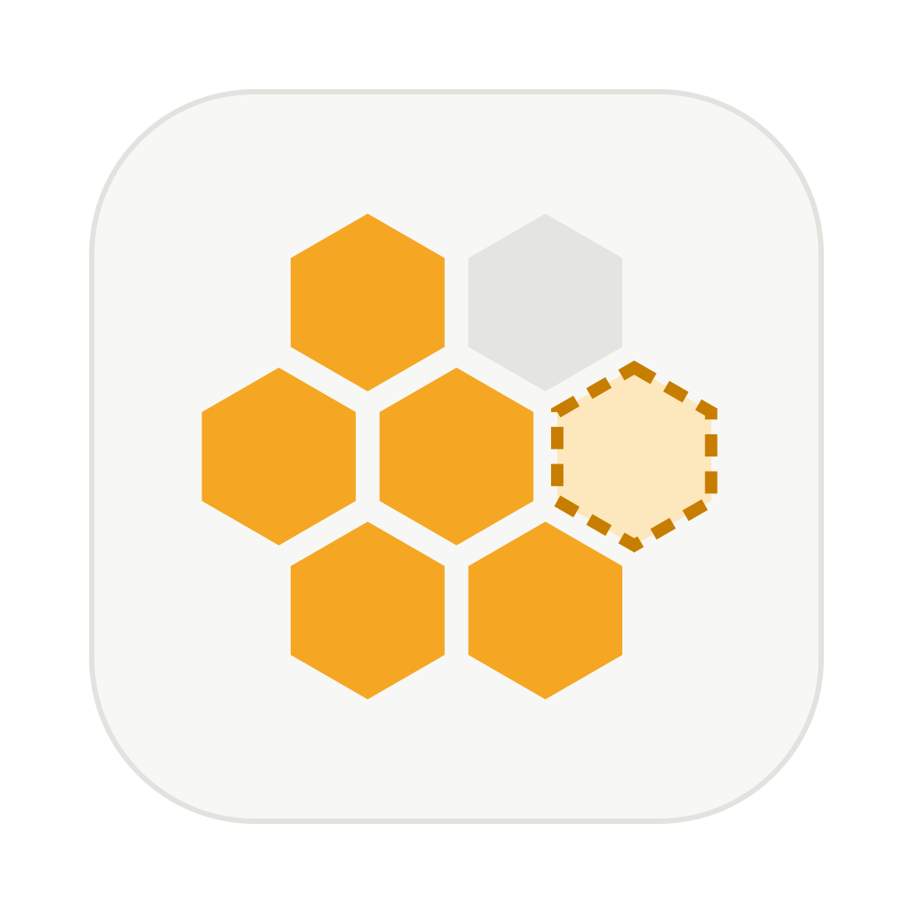

01
파일 찾기
드라이브를 미리 색인해 두고, 입력하는 대로 결과를 보여 줍니다. 어디서든 단축키로 빠른 검색 창을 띄울 수 있습니다.
CtrlShiftSpace macOS ⌃⇧Space

HonijmacOS · Windows · 무료
PC 정돈은 Honij 하나로.
이름 몇 글자로 파일을 찾고, 공간을 차지하는 것을 확인한 뒤 비우고, 탐색기 창은 폴더마다 색으로 구분합니다.
드라이브를 미리 색인해 두고, 입력하는 대로 결과를 보여 줍니다. 어디서든 단축키로 빠른 검색 창을 띄울 수 있습니다.
CtrlShiftSpace macOS ⌃⇧Space
폴더마다 색과 이름표를 정해 두면, 그 폴더를 연 탐색기 창에 색 테두리가 둘러집니다. 창을 여러 개 띄워도 헷갈리지 않습니다.
어느 폴더가 공간을 차지하는지 크기순으로 펼쳐 봅니다.
큰 파일과 캐시·임시 파일을 찾아 목록으로 보여 주고, 고른 것만 지웁니다.
앱을 지울 때 함께 남는 설정·캐시 파일까지 찾아 줍니다.
파일이나 폴더에 메모를 달아 두고, 나중에 메모 내용으로 다시 찾습니다.
최신 버전을 확인하는 중…
Honij 는 아직 코드 서명을 하지 않아서, 처음 실행할 때 운영 체제가 한 번 막습니다. 아래 순서로 넘어갈 수 있습니다.
.dmg 를 열어 Honij 를 응용 프로그램 폴더로 옮깁니다.